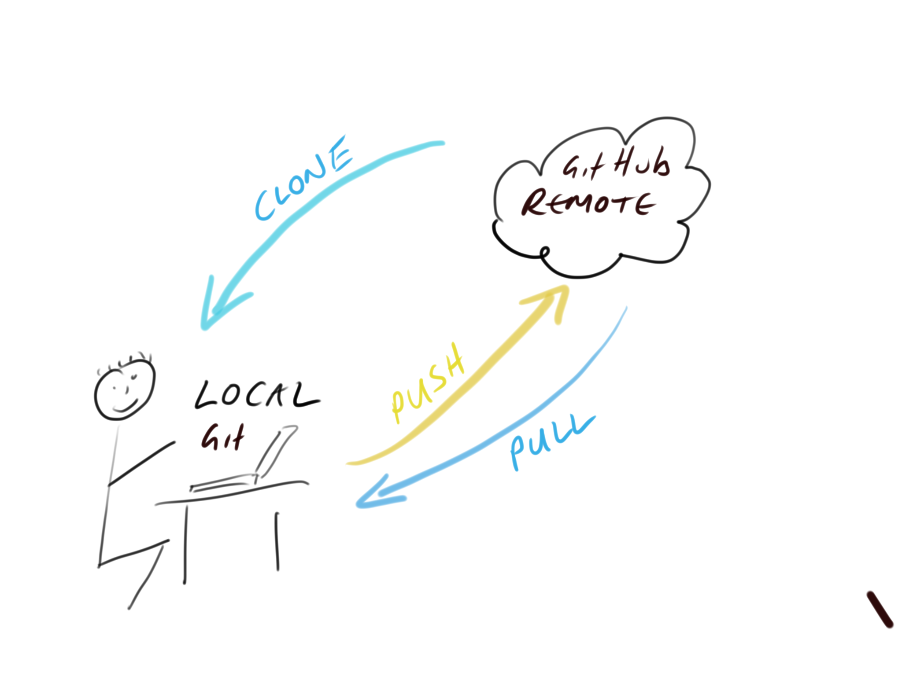
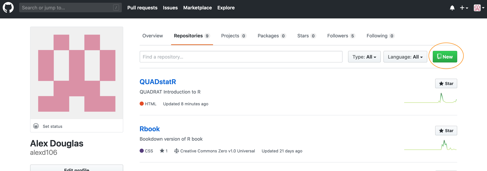

Version control with Git and GitHub
This short(ish!) tutorial will introduce you to using a version control system to keep track of all your important PhD documents and facilitate collaboration with colleagues. The tutorial will focus on using the software ‘Git’ in combination with the web-based hosting service ‘GitHub’. By the end of the tutorial, you will be able to install and configure Git and GitHub on your computer, setup and work with a version controlled project in RStudio, track changes in your project, revert to previous versions of your project and finally how to resolve issues with Git and GitHub. Just a note of caution, Git and version control in general is a very large (and sometimes complicated) subject area which will take you some time to get completely comfortable with. This tutorial will get you started with the basics but be prepared to do some extra reading and don’t worry if it takes you some time to get your head around it all. It’s worth it!
I estimate that this tutorial should take you roughly 1.5 to 2.5 hours to complete in one sitting, but feel free to dip in and out over a longer period if that suits you better.
What is version control?
A Version Control System (VCS) keeps a record of all the changes you make to your files that make up a particular project and allows you to revert to previous versions of files if you need to. To put it another way, if you muck things up or accidentally lose important files you can easily roll back to a previous stage in your project to sort things out. Version control was originally designed for collaborative software development, but it’s equally useful for scientific research and collaborations (although admittedly a lot of the terms, jargon and functionality are focused on the software development side). There are many different version control systems currently available, but we will focus on using Git, because it’s free and open source and it integrates nicely with RStudio. This means that its can easily become part of your usual workflow with minimal additional overhead.
Why use version control?
So why should you worry about version control? Well, first of all it helps avoid this (familiar?) situation when you’re working on a project

You need version control
usually arising from this (familiar?) scenario

Version control automatically takes care of keeping a record of all the versions of a particular file and allows you to revert back to previous versions if you need to. Version control also helps you (especially the future you) keep track of all your files in a single place and it helps others (especially collaborators) review, contribute to and reuse your work through the GitHub website. Lastly, your files are always available from anywhere (and on any computer), all you need is an internet connection.
What is Git and GitHub?
Git is a version control system originally developed by Linus Torvalds that lets you track changes to a set of files. These files can be any type of file including the menagerie of files that typically make up a data orientated project (.pdf, .Rmd, .docx, .txt, .jpg etc) although plain text files work the best. All the files that make up a project is called a repository (or just repo).
GitHub is a web-based hosting service for Git repositories, which allows you to create a remote copy of your local version-controlled project. This creates a backup and archive of your project, making it accessible to you and to your collaborators.
At the start of a project we typically create a remote repository on GitHub, then clone (think of this as copying) this repository to our local computer (the one in front of you). This cloning is usually a one time event and you shouldn’t need to clone this repository again unless you muck things up later. Once you have cloned your repository you can then work on your project as usual creating and saving files for your data analysis (scripts, R markdown documents, figures etc). Along the way you can take snapshots of these files after you’ve made important changes. We can then push these changes to the remote GitHub repository to make a backup or make available to our collaborators. If other people are working on the same project (repository), or maybe you’re working on a different computer, you can pull these changes back to your local repository so everything is synchronised.

Getting started
This tutorial assumes that you have already installed the latest versions of R and RStudio. If you haven’t done this yet you can find instructions here.
Install Git
To get started, we first need to install Git. If you’re lucky you may already have Git installed (especially if you have a Mac or Linux computer). You can check if you already have Git installed by clicking on the Terminal tab in the Console window in RStudio and typing git --version (the space after the git command is important). If you see something that looks like git version 2.25.0 (the version number may be different on your computer) then you already have git installed (happy days). If you get an error (something like git: command not found) this means you don’t have git installed (yet!).

You can also do the above outside RStudio by opening up a separate Terminal if you want. On Windows go to the ‘Start menu’ and in the search bar (or run box) type cmd and press enter. On a Mac go to ‘Applications’ in Finder, click on the ‘Utilities’ folder and then on the ‘Terminal’ program. On a Linux machine simply open the Terminal (Ctrl+Alt+T often does it).
To install Git on a windows computer we recommend you download and install Git for windows (also known as ‘Git Bash’). You can find the download file and installation instructions here.
For those of you using a Mac computer we recommend you download Git from here and install in the usual way (double click on the installer package once downloaded). If you’ve previously installed Xcode on your Mac and want to use a more up to date version of Git then you will need to follow a few more steps documented here. If you’ve never heard of Xcode then don’t worry about it!
For those of you lucky enough to be working on a Linux machine you can simply use your OS package manager to install Git from the official repository. For Ubuntu Linux (or variants of) open your Terminal and type
sudo apt update
sudo apt install git
You will need administrative privileges to do this. For other versions of Linux see here for further installation instructions.
Whatever version of Git you are installing, once the installation has finished verify that the installation process has been successful by running the command git --version in the Terminal tab in the Console in RStudio (as described above).
Configure Git
After installing Git, you need to configure it so you can use it. Click on the Terminal tab in the Console window again and type the following:
git config --global user.email 'you@youremail.com'
git config --global user.name 'Your Name'
substituting 'Your Name' for your actual name and 'you@youremail.com' with your email address. We recommend you use your University email address as you will also use this address when you register for your GitHub account (coming up in a bit).
If this was successful, you should see no error messages from these commands. To verify that you have successfully configured Git type the following into the Terminal
git config --global --list
You should see both your user.name and user.email configured.
As you can see above, Git can be used from the command line, but it also integrates well with RStudio, providing a friendly graphical user interface. If you want to use RStudio’s Git integration (we recommend you do - at least at the start), you need to check that the path to the Git executable is specified correctly. In RStudio, go to the menu Tools -> Global Options -> Git/SVN and make sure that ‘Enable version control interface for RStudio projects’ is ticked and that the ‘Git executable:’ path is correct for your installation. If it’s not correct hit the Browse... button and navigate to where you installed git and click on the executable file. You will need to restart RStudio after doing this.

Register a GitHub account
If all you want to do is to keep track of files and file versions on your local computer then Git is sufficient. If however, you would like to make an off-site copy of your project or make it available to your collaborators then you will need a web-based hosting service for your Git repositories. This is where GitHub comes into play (there are also other services like GitLab, Bitbucket and Savannah). You can sign up for a free account on GitHub here. You will need to specify a username, an email address and a strong password. We suggest that you use your University email address as this will also allow you to apply for a free educator or researcher account later on which gives you some useful benefits (don’t worry about this now though). When it comes to choosing a username we suggest you give this some thought. Choose a short(ish) rather than a long username, use all lowercase and hyphenate if you want to include multiple words, find a way of incorporating your actual name and lastly, choose a username that you will feel comfortable revealing to your future employer!
Next click on the ‘Select a plan’ (you may have to solve a simple puzzle first to verify you’re human) and choose the ‘Free Plan’ option. Github will send an email to the email address you supplied for you to verify.
Once you’ve completed all those steps you should have both Git and GitHub setup up ready for you to use (Finally!).
Setting up a project in RStudio
Now that you’re all set up, let’s create your first version controlled RStudio project. There are a couple of different approaches you can use to do this. You can either setup a remote GitHub repository first then connect an RStudio project to this (we’ll call this Option 1). Another option is to setup a local repository first and then link a remote GitHub repository to this (Option 2). You can also connect an existing project to a GitHub repository but we won’t cover this here. I would suggest that if you are completely new to Git and GitHub then use Option 1 as this approach sets up your local Git repository nicely and you can push and pull immediately. Option 2 requires more work (and therefore there are more opportunities to go wrong).
Option 1 - GitHub first
To use the GitHub first approach you will first need to create a repository (repo) on GitHub. Go to your GitHub page and sign in if necessary. Click on the ‘Repositories’ tab at the top and then on the green ‘New’ button on the right

Give your new repo a name (let’s call it first_repo for this tutorial), select ‘Public’, tick on the ‘Initialize this repository with a README’ (this is important) and then click on ‘Create repository’ (ignore the other options for now).

Your new GitHub repository will now be created. Notice the README has been rendered in GitHub and is in markdown (.md) format (see the other tutorial on R markdown if this doesn’t mean anything to you). Next click on the green ‘Clone or Download’ button and copy the https//... URL that pops up to the clipboard (either highlight it all and copy or click on the clipboard icon to the right).

Ok, we now switch our attention to RStudio. In RStudio click on the File -> New Project menu. In the pop up window select Version Control.

Now paste the the URL you previously copied from GitHub into the Repository URL: box. This should then automatically fill out the Project Directory Name: section with the correct repository name (it’s important that the name of this directory has the same name as the repository you created in GitHub). You can then select where you want to create this directory by clicking on the Browse button opposite the Create project as a subdirectory of: option. Navigate to where you want the directory created and click OK. I also tick the Open in new session option.

RStudio will now create a new directory with the same name as your repository on your local computer and will then clone your remote repository to this directory. The directory will contain three new files; first_repo.Rproj (or whatever you called your repository), README.md and .gitignore. You can check this out in the Files tab usually in the bottom right pane in RStudio. You will also have a Git tab in the top right pane with two files listed (we will come to this later on in the tutorial). That’s it for Option 1, you now have a remote GitHub repository set up and this is linked to your local repository managed by RStudio. Any changes you make to files in this directory will be version controlled by Git.

Option 2 - RStudio first
An alternative approach is to create a local RStudio project first and then create and link to a remote Github repository. As I mentioned above, this option is more involved than Option 1 so feel free to skip this now and come back later to it if you’re interested. However, this option is useful if you just want to create a local RStudio project linked to a local Git repository (i.e. no GitHub involved).
In RStudio click on the File -> New Project menu and select the New Directory option.

In the pop up window select the New Project option

In the New Project window specify a Directory name (choose second_repo for this tutorial) and select where you would like to create this directory on you computer (click the Browse button). Make sure the Create a git repository option is ticked

This will create a version controlled directory called second_repo on your computer that contains two files, second_repo.Rproj and .gitignore (there might also be a .Rhistory file but ignore this). You can check this by looking in the Files tab in RStudio (usually in the bottom right pane).

OK, before we go on to create a repository on GitHub we need to do one more thing - we need to place our second_repo.Rproj and .gitignorefiles under version control. Unfortunately we haven’t covered this in detail yet so just follow the next few instructions (blindly!) and we’ll revisit them in the Using Git section of this tutorial.
To get our two files under version control click on the ‘Git’ tab which is usually in the top tight pane in RStudio

You can see that both files are listed. Next, tick the boxes under the ‘Staged’ column for both files and then click on the ‘Commit’ button.

This will take you to the Commit window. Type in the commit message ‘First commit’ in the ‘Commit message’ window and click on the ‘Commit’ button. A new window will appear with some messages which you can ignore for now. Click ‘Close’ to close this window and also close the Commit window. The two files should now have disappeared from the Git pane in RStudio indicating a successful commit.

OK, that’s those two files now under version control. Now we need to create a new repository on GitHub. In your browser go to your GitHub page and sign in if necessary. Click on the green ‘New’ button on the right. Give your new repo the name second_repo (the same as your version controlled directory name) and select ‘Public’. This time do not tick the ‘Initialize this repository with a README’ (this is important) and then click on ‘Create repository’.

This will take you to a Quick setup page which provides you with some code for various situations. The code we are interested in is the code under ...or push an existing repository from the command line heading.

Highlight and copy the first line of code (note: yours will be slightly different as it will include your GitHub username not mine)
git remote add origin https://github.com/alexd106/second_repo.git
Switch to RStudio, click on the ‘Terminal’ tab and paste the command into the Terminal. Now go back to GitHub and copy the second line of code
git push -u origin master
and paste this into the Terminal in RStudio. You should see something like this

If you take a look at your repo back on GitHub (click on the /second_repo link at the top) you will see the second_repo.Rproj and .gitignore files have now been pushed to GitHub.

The last thing we need to do is create and add a README file to your repository. A README file describes your project and is written using the same Markdown language you learned in the R markdown tutorial. A good README file makes it easy for others (or the future you!) to use your code and reproduce your project. You can create a README file in RStudio or in GitHub. Let’s use the second option.
In your repository on GitHub click on the green Add a README button.

Now write a short description of your project in the <> Edit new file section and then click on the green Commit new file button.

You should now see the README.md file listed in your repository. It won’t actually exist on your computer yet as you will need to pull these changes back to your local repository, but more about that in the next section.
Whether you followed Option 1 or Option 2 (or both) you have now successfully setup a version controlled RStudio project (and associated directory) and linked this to a GitHub repository. Git will now monitor this directory for any changes you make to files and also if you add or delete files. If the steps above seem like a bit of an ordeal, just remember, you only need to do this once for each project and it gets much easier over time.
Using Git
Now that we have our project and repositories (both local and remote) set up, it’s finally time to learn how to use Git in RStudio!
Typically, when using Git your workflow will go something like this:
You create/delete and edit files in your project directory on your computer as usual (saving these changes as you go)
Once you’ve reached a natural ‘break point’ in your progress (i.e. you’d be sad if you lost this progress) you stage these files
You then commit the changes you made to these files (along with a useful commit message) which creates a permanent snapshot of these changes
You keep on with this cycle until you get to a point when you would like to push these changes to GitHub
If you’re working with other people on the same project you may also need to pull their changes to your local computer

OK, let’s go through an example to help clarify this workflow. In RStudio open up the first_repo.Rproj file you created previously during Option 1. Create an R markdown document inside this project by clicking on the File -> New File -> R markdown menu (remember from the R markdown tutorial?).
Once created, we can delete all the example R markdown code (except the YAML header) as usual and write some interesting R markdown text and include a plot. We’ll use the inbuilt cars dataset to do this. Save this file (cmd + s for Mac or ctrl + s in Windows). Your R markdown document should look something like the following (it doesn’t matter if it’s not exactly the same).

Take a look at the ‘Git’ tab which should list your new R markdown document (first_doc.Rmd in this example) along with first_repo.Rproj, and .gitignore (you created these files previously when following Option 1).

Following our workflow, we now need to stage these files. To do this tick the boxes under the ‘Staged’ column for all files. Notice that there is a status icon next to the box which gives you an indication of how the files were changed. In our case all of the files are to be added (capital A) as we have just created them.

After you have staged the files the next step is to commit the files. This is done by clicking on the ‘Commit’ button.

After clicking on the ‘Commit’ button you will be taken to the ‘Review Changes’ window. You should see the three files you staged from the previous step in the left pane. If you click on the file name first_doc.Rmd you will see the changes you have made to this file highlighted in the bottom pane. Content that you have added is highlighted in green and deleted content is highlighted in red. As you have only just created this file, all the content is highlighted in green. To commit these files (take a snapshot) first enter a mandatory commit message in the ‘Commit message’ box. This message should be relatively short and informative (to you and your collaborators) which succinctly summarises the changes you have made. It is traditional to enter the message ‘First commit’ (or ‘Initial commit’) when you commit files for the first time. Now click on the ‘Commit’ button to commit these changes.

A summary of the commit you just performed will be shown. Once you’re happy click on the ‘Close’ button to return to the ‘Review Changes’ window. Note that the staged files have now been removed.

Now that you have commited your changes the next step is to push these changes to GitHub. To do this click on the green ‘Push’ button on the top right of the Review Changes window.
Work in progress below
Once your project is set up, you can start working on your code, perhaps by creating an R script that reads in your data and carries out some preliminary analysis. First open a new R script, then type some commands, for example:

Now you can save your script. RStudio will automatically save your script in your project directory, so just give it a name and click Save.
After you’ve created this file in your project, you need to get it under version control. By default, the git version control pane is in the top right hand corner of RStudio. Find it and click on the Git tab. You’ll see a list of the files in your project directory.

The git tab
If you hover the mouse pointer over the yellow ? marks in RStudio, you’ll see a tooltip telling you that the files are Untracked. This means that git is not tracking versions of these files.
Git will only keep track of modifications to files that it has been asked to manage, so you need to tell git which files to track.
Tick the Staged checkbox for each file.
All of your files are now staged, ready for you to record those changes as a commit. Each commit creates a snapshot of the project directory, allowing you to record the state of your project through time. Click on Commit.
This will open a pane showing details of the commit. You need to specify a Commit message in the right hand panel. Commit messages should explain why you have made a change and not what you have changed. Git keeps track of what has changed (see use of Diff below) and so it is best not to use commit messages for this purpose. The commit message lets your future self or your collaborators know why you made this change.
Since this is the first commit, you can follow tradition and use a brief message such as First commit, but for subsequent commits it’s worth providing a more descriptive message. Once you’ve typed a commit message, click on Commit.

Your first commit
A message displaying the output from git will be shown. Click on Close and you are done.
Making changes
Now we want to make some changes to our R script, for example modify a plot.

After you have modified your code, save the script. Now, click on the Git tab in RStudio. You’ll notice that there’s only one file listed, since RStudio only lists files that have changed in its git interface.
Click on the Staged checkbox to stage your change. Now click on Diff (next to Commit) to display a summary of what’s changed. Lines that have been added are green. Lines that have been removed are red (note that from git’s point of view, a modification to a line is actually two operations: the removal of the original line followed by the creation of a new line).

Review your changes
Add a commit message and click on Commit. In the Git tab of RStudio, click on Diff and then History. You’ll see that you can look through every commit you’ve ever made. This can be extremely useful for finding bugs or looking back to how your model looked a few months ago.
Pulling and pushing changes
Once a local repository has been associated with GitHub, it’s not necessary to use the command line for subsequent uploads. However, you will want to always keep the local (e.g., your personal computer) and remote (e.g., GitHub) copy in sync with one another. To do this you will Pull and Push changes from one copy to the other.
When you start working on your local repository (e.g., files on your own computer), it is best to start by Pulling any new changes off of your remote repository (e.g., GitHub). Similarly, when you are finished working on them in your local repository (e.g., your computer) it is good to then Push them to the remote repository (e.g., GitHub). We will walk through this basic workflow that enables you to keep your local files in sync across multiple computers or when files may change because of someone else working on the project.
To start working on a project, Pull any new changes to update your local copy.

Pull changes from remote repository
Now make a change to your script, commit the change and Push. You should see something like this:

Push changes to remote repository
And you’re done! Now your remote and local copy are synchronised and any changes you’ve made are available to you and your collaborators.
A version control workflow
Let’s summarise the steps you can take to version control your project.
Set up a local version control repository (section 8.2)
Write some code
Save your script to the local repository
Choose (stage) files to be included in the version history
Commit your files
Create a remote repository on GitHub (section 8.3)
Synchronise your changes with the remote repository
Repeat steps 2-7
Using git from the command line
You don’t need to use RStudio to be able to version control your R projects. You can use git from the command line. In this section we will go through the same steps explained in the previous sections but using git commands.
Setting up a git repository
Open a Terminal (or command prompt if on Windows) as you have done in section 8.1. To set up a local git repository, enter the following commands:
mkdir myproj
cd myproj
git initThe first command creates a new directory called myproj, the second changes the working directory to your new folder and the last line initiates the git repository. Although you won’t see any changes in your directory myproj, the command git init has created the hidden structure that git needs to start tracking changes in your files.
Staging files and first commit
In RStudio we told git which files we wanted to keep track of by ticking the checkbox next to the file name. We can give git the same instruction from the command line. Create a new R script in your new directory myproj. You can just copy the code from the previous Script.R file. Once you have saved your script enter the following command:
git add Script.RAnd your file is now under version control.The command git status will produce a summary of the current state of the working directory, listing files that have changes that need to be committed, those that have not been staged and files that are not being tracked.
Now that your script is being tracked, you can create your first commit with the following command:
git commit -m "My first commit"
The -m option allows you to specify a commit message directly. Before we go any further, check that version control is set by running git log. This will report the details of your first commit.
Now that your project is under version control, you can start making changes to your code.At every point while you are working on your project, you can use git status to check which files have been modified and git diff for more details on the changes you’ve made. Once you are happy with your changes use git add to stage your file and git commit to commit them. The command git commit without the option -m will open a text editor that you can use to write a longer commit message.
Connecting to a remote repository
As we did in section 8.3, you can create a remote repository on GitHub and connect your local repository. Follow the steps in section 8.3.1 to create a new repository on GitHub. After you click on the green Create repository button, copy and paste the commands found under the section labelled …or push an existing repository from the command line into the command line.
The workflow
Once your remote repository is set up, you can use the same workflow explained in section 8.4.
- Make changes to your files or add new files
- Stage the new or modified files with the command
git add - Commit the changes you have made with
git commit - Push your changes to the remote repository with
git push
Now that you have a version control workflow, there are different things you can do.
View your project history
Your commits are a record of all the changes you have made to your code; viewing this history can help you track the development of your project, highlight major revisions and identify where a bug was introduced.
Revert to a previous commit
Oops, I broke it! One of the great things about a version control system is that if you break your code you can always go back to when it was still working. There are two ways:
If you have made a mistake or you forgot to include a file in your last commit, which you have not yet pushed to your remote repository, then you can just make your changes, use
git addto stage the new or the changed file and then use the commandgit commit --amend. This will change your previous commit to include the new changes. You can also use this command on its own if you just want to modify the commit message.If you are already a few commits away from the one that broke your code and you need to go back to a previous version of your project, first use
git reflog, which will show you a list of everything you have done in git. Then, find the step that broke your code. Finally usegit resetand the step’s index (something of the formHEAD@{index}, which you’ll find in the output ofgit reflog) to revert to that point in time. Seems like magic, but it has limitations.git resetcan create problems if you have already pushed changes to the remote repository, so only use it in this way if you want to go back a series of commits that you have not pushed yet.
Collaborate
GitHub is a great tool for collaboration, it can seem scary and complicated at first, but it is worth investing some time to learn how it works. What makes it so good for collaboration is that it is a distributed system, which means that every collaborator works on their own copy of the project and changes are then merged together in the remote repository. There are two different ways you can set up a collaborative project on GitHub. One is the workflow we just went through, where everybody connects their local repository to the same remote one; this system works well with small project where different people mainly work on different aspects of the project. The second approach consists of every collaborator creating a copy (or fork) of the main repository, which becomes their remote repository. Every collaborator then needs to send a request (a pull request) to the owner of the main repository to incorporate any changes into the main repository and this includes a review process before the changes are integrated.
Git offers a number of advanced features that you can incorporate in your workflow. If you are going to be working on a large collaborative project it is worth looking into forking, branching and pull requests. If you are the only person working on your code, then the workflow detailed here is usually enough.
Further resources
There are many good guides online to learn more about git and GitHub and as with any open source software there is a huge community that can be a great resource:
The British Ecological Society guide to Reproducible Code
The GitHub guides
The Mozilla Science Lab GitHub for Collaboration on Open Projects guide
If you have done something terribly wrong and don’t know how to fix it try Oh Shit, Git
These are only a couple of examples, all you need to do is Google “version control with git and GitHub” to see how huge the community around these open source projects is and how many free resources are available for you to become a version control expert.